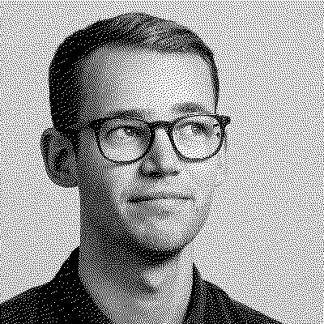

./filip_bontin.sh
Summary
Dedicated software engineer with a passion for programming, sustainability and learning new things. When I'm not in front of the computer, I hang out with friends, enjoy nature or paint with watercolors.
Sustainability 🌱
Sustainability is a big part of my life, so I've also incorporated it into this website, by trying to keep the size of the website as small as possible. Read more about sustainability regarding this website in the github repo.
Experiences 🧑💻
Devoteam: Apr 2018 - Current I have worked with a few different projects, mostly focused on frontend. We have used React, TypeScript, Web Components and Azure amongst others. I've also been involved with organizing competence days.
Valtech: Feb 2017 - Mar 2018 Fullstack developer using React, .NET and other at Valtech's Malmö office.
Master thesis: May 2017 - Oct 2017 Developed a prototype for participatory urban planning using Unity and a 75" touch screen.
Emmaboda Festival: Nov 2016 - May 2017 One part of a two-man team that developed the festival's first iPhone app using Swift.